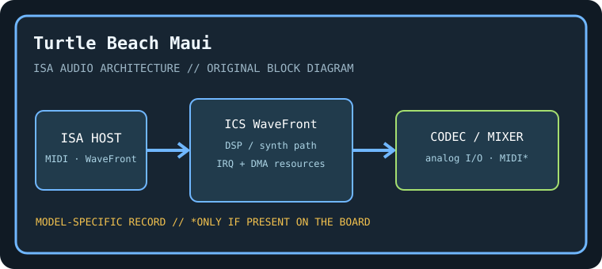

[ INDIVIDUAL COMPONENT // SOUND HARDWARE ]
Turtle Beach Maui (ISA WaveFront)
Turtle Beach Maui is a dedicated ISA WaveFront MIDI synthesis board, not a general-purpose Sound Blaster PCM card. It requires a separate audio path to hear its analog synth output.

Model-specific specifications
| Catalog identity / chipset / DSP | Turtle Beach Maui (ISA WaveFront). ICS WaveFront wavetable synthesizer architecture (identify the WaveFront controller and ROM/RAM population on the individual card); not a Creative DSP. |
|---|---|
| Audio codec / conversion | No general-purpose PCM codec/ADC-DAC sound-card path is specified for Maui; its onboard analog synth output is separate from PC sample-capture/playback codecs. |
| Bus / I/O / ports | 16-bit ISA. WaveFront/MIDI control resources are configurable; MIDI interface conventions commonly use 330h, but use the Maui setup utility/manual for exact controller, synth, and audio output configuration. |
| IRQ | MIDI/synth services may use a selected IRQ depending on interface/driver mode; do not assume Sound Blaster IRQ defaults. Preserve the actual Maui configuration. |
| DMA | No Sound Blaster PCM DMA engine. MIDI synthesis is command-driven; do not allocate DMA based on Sound Blaster family expectations. |
| Driver / operating system | Turtle Beach Maui DOS/Windows WaveFront drivers and patch-management utilities; sequencer compatibility depends on the driver’s MIDI port and patch-bank setup. No PCM game compatibility is implied. |
| Motherboard compatibility | ISA-compatible PC motherboard with available I/O and any configured interrupt. Analog output must feed a mixer/speakers or a separate audio card; verify resource sharing with existing MIDI interfaces. |
| Sound standards / interfaces | WaveFront wavetable synthesis and MIDI/General MIDI operation with compatible patches and driver. This is not an AdLib OPL2 or Sound Blaster PCM standard device. |
| Connectors / power | ISA slot power; use only the analog, MIDI, CD-audio, and auxiliary connectors physically present on this exact board. Inspect the edge bracket, keyed headers, PCB revision, and manual before connecting. |
Compatibility & preservation notes
Turtle Beach Maui is a dedicated ISA WaveFront MIDI synthesis board, not a general-purpose Sound Blaster PCM card. It requires a separate audio path to hear its analog synth output. The precise DSP/codec package, firmware, resource assignment, and OS driver release must be matched to the physical SKU. Record the actual base port, IRQ, DMA channels, driver version, motherboard chipset, and BIOS configuration used in a working test rather than copying family defaults.
- Photograph the complete model number, PCB revision, major IC markings, jumpers, connectors, and any daughterboard before service.
- Check DMA and IRQ reservations against storage, serial/parallel, and other ISA devices; test PCM, synthesis, and MIDI functions independently.
- Power down and unplug the host before fitting/removing ISA hardware. Keep the exact manual and original setup/driver media with the specimen.
Manufacturer manuals & archival sources
- Internet Archive — Turtle Beach Maui user manualArchive catalog search for original manufacturer-authored manual/setup documentation for this model; confirm the full SKU and revision in any scan.
- Internet Archive — Turtle Beach Maui WaveFront driver and patch diskArchive catalog search for preserved manufacturer driver, utility, or bundled software media for this specific board.
- Internet Archive — Turtle Beach Maui ISA WaveFront documentation archiveAdditional model-specific catalog records and manuals; use the physical board marking to exclude adjacent revisions and related products.
Archive search links are discovery records rather than claims that one particular scan is an original; verify provenance, revision and completeness before relying on a scanned setup guide.